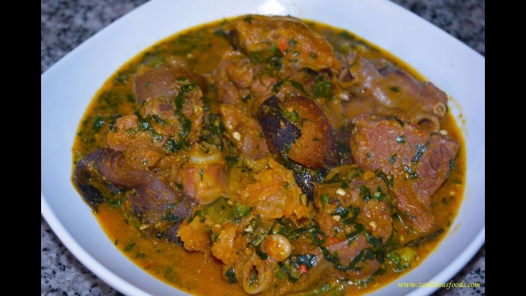
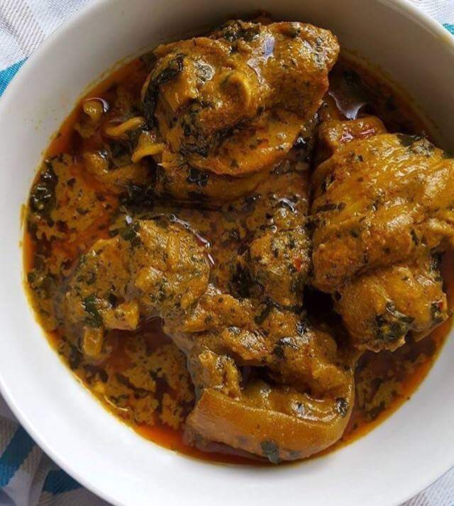
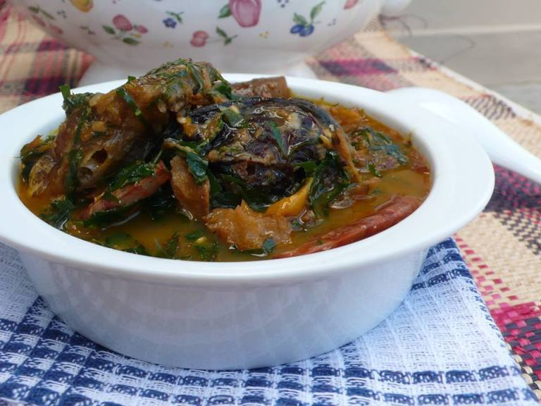

chef jeo soups

explore our varity of soups from every clime in the geo political southern states of nigeria.

This is the famous ofe owerri with a touch of perfection, from the acient city of owerri,like the saying goes
one na ejigi ego ona eri ofe owerri
the swipe is a varity of soups, all to have to do is just to click of the soup of your intrest.